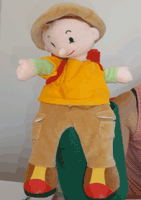
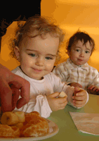
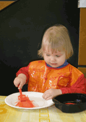
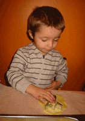

|
 |
| Relais d'Assistantes Maternelles Parents Enfants intercommunal
du Val d'Europe |
- Le RAM
intercommunal
- Parents,
futurs parents
- RAM pour
les enfants
- Assistantes
maternelles
- Dates
importantes
- Liste assistantes
maternelles
- Ludothèque
municipale
Contenu 1
Le Relais d'Assistantes Maternelles Parents/Enfants intercommunal du Val d'Europe est un lieu de rencontre, d'information et d'accompagnement pour :
- les parents et futurs parents,
- les enfants,
- les Assistantes Maternelles et les futures Assistantes Maternelles.
Le RAM propose à tous les usagers un accueil de qualité dans le respect des besoins de chacun. C’est un service gratuit.
Créé en 2004, le RAM est subventionné et mis en œuvre par le SAN avec le concours financier des communes, de la CAF et du Conseil Général de Seine et Marne.
Renseignements auprès de Christelle Ribes
|
|
 |
Contenu 2
| RAM / parents et futurs parents |
Aux parents et futurs parents, le RAM offre :
-
une aide dans la recherche d'une Assistante Maternelle Agréée (liste des Assistantes Maternelles Agréées, recensement offre/demande). Liste disponible en téléchargement
-
des conseils pour toutes vos démarches administratives liées à l'emploi d'une Assistante Maternelle (déclaration à l'URSSAF, à la CAF, connaissance de la Convention Collective...),
-
une information sur les modes de garde existants sur la commune,
-
une écoute et un accompagnement concernant l'accueil de votre enfant,
-
une information sur vos droits et obligations en tant qu'employeur.
-
la possibilité d'accompagner votre enfant sur le lieu des ateliers du RAM
|
|
 |
Contenu 3
Aux enfants accueillis au domicile d'une Assistante Maternelle, le RAM offre :
|
|
 |
Contenu 4
| Le RAM pour les assistantes maternelles |
Aux assistantes maternelles (agréées) et employées de maison, le RAM propose :
-
des informations sur le statut, l'agrément, la formation et les conditions d'accueil, un prêt de documentation (magazines spécialisés)
-
des échanges, groupes de parole, avec d'autres professionnels de la petite enfance,
-
des rencontres, les lundis et jeudis à Terre d'Éveil, avec d'autres Assistantes Maternelles
-
un atelier un jeudi par mois consacré au jeu (découverte des jeux et possibilité d'emprunt) grâce à la ludothèque créée par la commune de Serris (voir onglet ludothèque municipale). Un calendrier est établi, les réservations se font les lundis après midi de 15h00 à 18h00 au 01 60 43 66 75 auprès de Marie SCANFF à l'adresse suivante ateliers.ram.serris@gmail.com
-
votre participation à la vie du RAM en proposant vos compétences (temps forts, pique-nique, fête du relais assistantes maternelles parents enfants…)
-
Organisation d’ateliers en direction des assistantes maternelles et des enfants
à Serris :
- les lundis et jeudis de 9h00 à 11h15
Terre d'Éveil - 10 rue de Navarre - Serris
Réservation service Vie Locale du SAN au 01 60 43 66 26
Permanences en direction des parents
pour les habitants des communes de Chessy et Serris
|
|
 |
La liste des assistantes maternelles est disponible sur le site internet du SAN du Val d'Europe.
> Accéder au site du SAN.
|
Contenu 5
|
|
| Calendrier des ateliers ludothèques |
|
La commune de Serris a mis en place un prêt de jeux destiné aux assistantes maternelles pendant les ateliers du RAM.
-
Une Ludothèque : un espace où les enfants et les assistantes maternelles découvrent des jeux, jouent et empruntent le matériel afin de poursuivre les jeux à domicile.
-
Ouverture : un jeudi par mois sur l’atelier à Terre d’Éveil.Places disponibles : un maximum de 15 enfants par créneau d’accueil.
-
2 horaires : pour permettre à un maximum de personnes de bénéficier de cet accueil mensuel :
-
9 h 15 - 10 h 00
-
10 h 15 - 11 h 00
-
Faut-il prendre rendez-vous ?
L’accueil à la ludothèque se fait sur rendez-vous pris auprès de Mme Marie Scanff
|
|
- LES JEUDIS
- 27 septembre 2012
- 25 octobre 2012
- 29 novembre 2012
- 20 décembre 2012
- 24 janvier 2013
- 21 février 2013
- 28 mars 2013
- 25 avril 2013
- 23 mai 2013
- 27 juin (retour des prêts, sans emprunt)
Le règlement est à télécharger ici.
Découverte des jeux proposés
|
|
| |
 |
Service Petite Enfance de la Ville de Serris.
Mme Marie Scanff
Tél. : 01 60 43 52 00,
le lundi de 15 h 00 à 18 h 00,
ou par courriel : ateliers.ram.serris@gmail.com
|
|

Mme Marie Scanff |
|
|
|
|